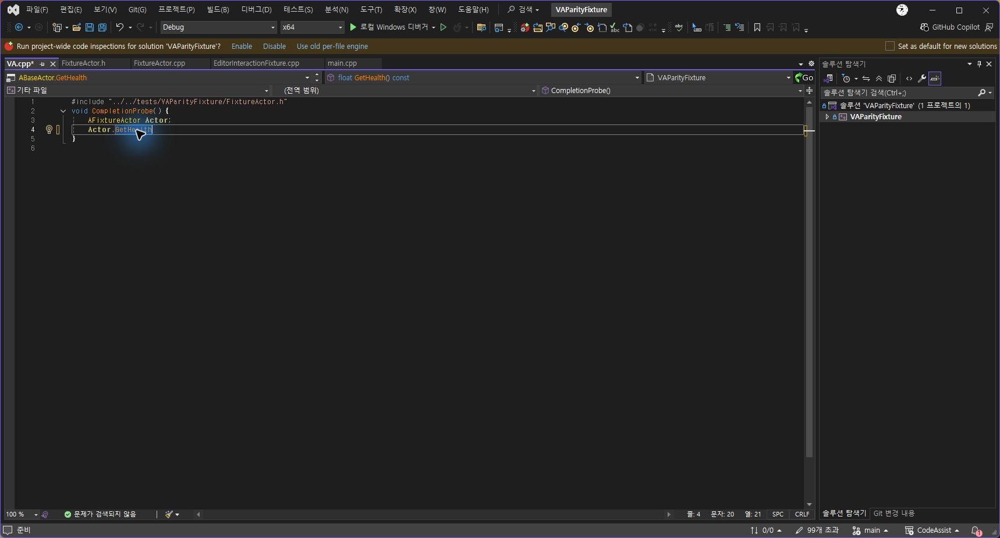
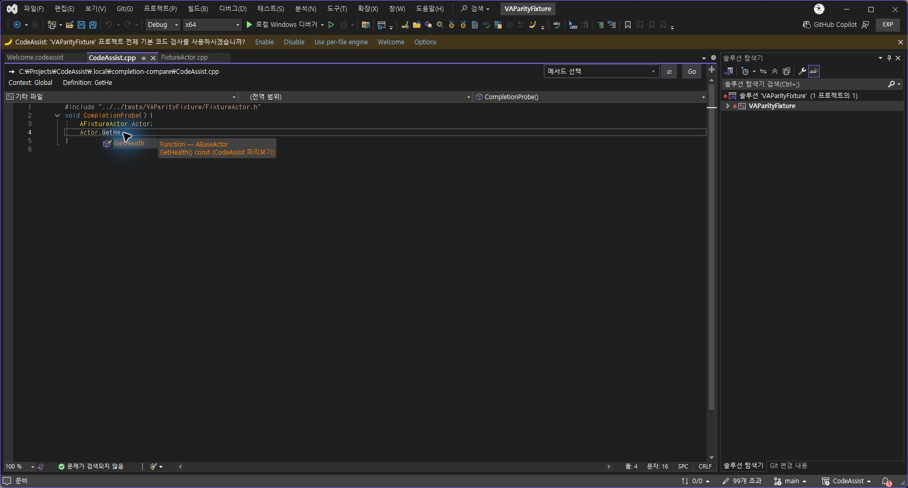
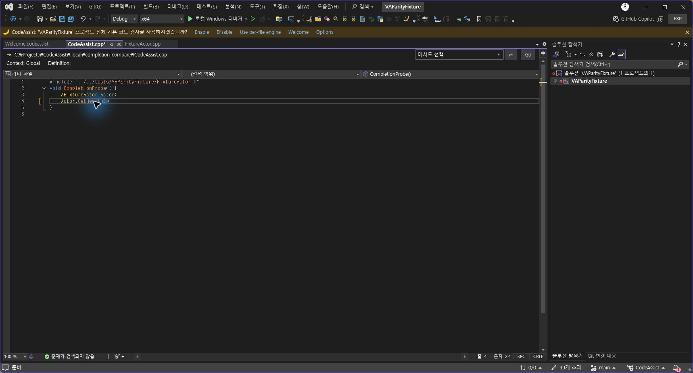
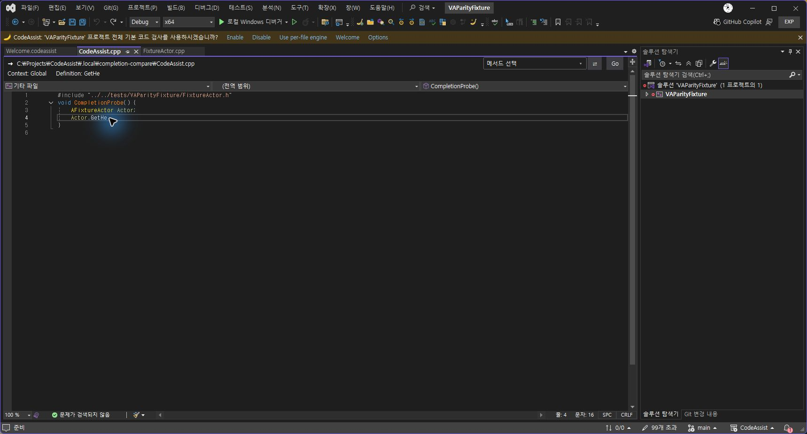

Tracefolio REPORTS & ISSUES
Tracefolio REPORTS & ISSUES0.0.83 자동 완성 실제 대조
기존 기록 이전원문에 기록된 작업 내용과 당시 검증 범위를 정리한 보관 기록입니다.
CodeAssist 0.0.83 · 자동 완성 실제 대조
0.0.83 자동 완성 실제 대조
설치된 VA 10.9.2630.0과 별도 CodeAssist 실험 인스턴스에서 같은 Actor.GetHe 입력을 비교했습니다. 사용자 파일 대신 별도 임시 C++ 파일을 사용했습니다.
수정·적용한 결과
| 항목 | 수정 전 | 수정 후 |
|---|---|---|
| Ctrl+Space | 네이티브 확정 뒤 추천창이 다시 남음 | 유일 후보 GetHealth() 확정 후 목록 종료 |
| Undo | 괄호만 제거되고 완성된 이름이 남음 | 이름 치환과 괄호를 한 번에 취소, GetHe 복원 |
| 추천 색상 | 후보가 네이티브와 모두 겹치면 기본 목록으로 빠짐 | CodeAssist 색상 설정이면 겹치는 후보도 함수 색상 표시 |
원본 VA 실제 화면

최종 설치본 실제 화면
네이티브 후보와 겹치는 함수도 색상 표시:

Tab 확정:

Undo 한 번으로 원래 접두어 복원:

검증 근거
소스 회귀 260개 통과.
최종 설치 DLL의 MVID와 일치하는 실제 편집기 검사 14개 통과.
패키지·설치 바이너리 6개 해시 일치, 등록 단축키 24개 확인.
Redo·Escape·Ctrl+Space 전체 흐름은 색상 추가 수정 직전 빌드에서 관찰했습니다. 최종 빌드는 색상·Tab·Undo와 편집기 14개를 다시 검사했습니다.
세부 실행 기록 · 최종 편집기 검사 · 패키지 · 설치 해시
남은 전체 작업
108개 기능 전체에 대한 동일 입력·설정·예외·Undo·성능 대조.
추천 Enter·기본 VS 색상 토글·양 테마·템플릿·오버로드·스니펫·입력 지연 전체 행렬.
리팩터링의 참조 갱신과 Undo 지원 범위 확대.
미지원 옵션·부동 빠른 작업 도구 모음과 나머지 UI.
실제 Unreal 프로젝트의 VA 대비 시작·엔진 분석·타이핑·검색 성능.
전체 유사도: 미측정. 부분 코드 대응 108/108, 전체 기준 완전 검증 0/108. 분석율: 문서 기반 부분 명세 108/108(100%), 전체 역분석 완료율 미확인.
원문과 편집 이력
- 원문 SHA-256:
32094d72757c353f41ae7471f1d5d4e8b5cf334c4adc0c2b2780263b92b7fc16 - 표시 날짜는 원본 파일의 수정 시각입니다. 작업 완료 시각은 원문에 있는 값을 기준으로 확인합니다.